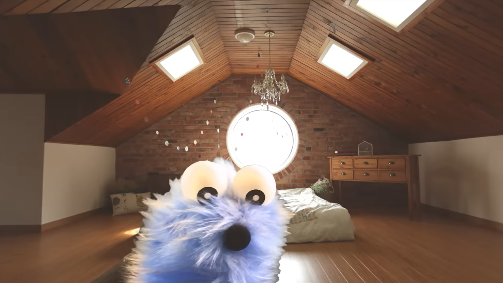
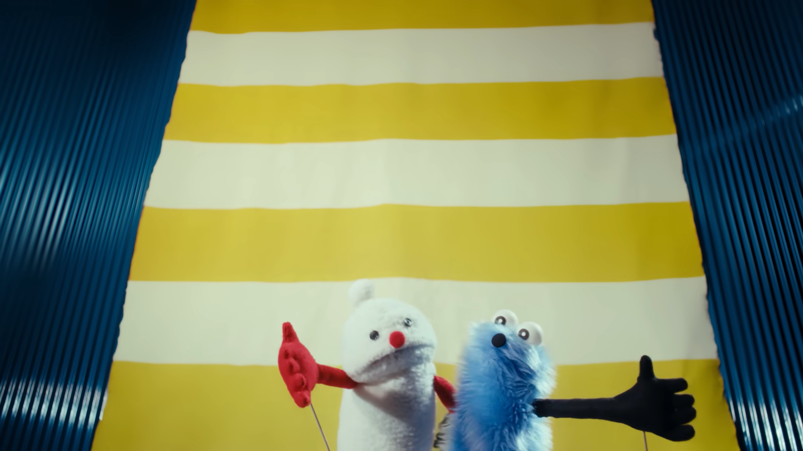
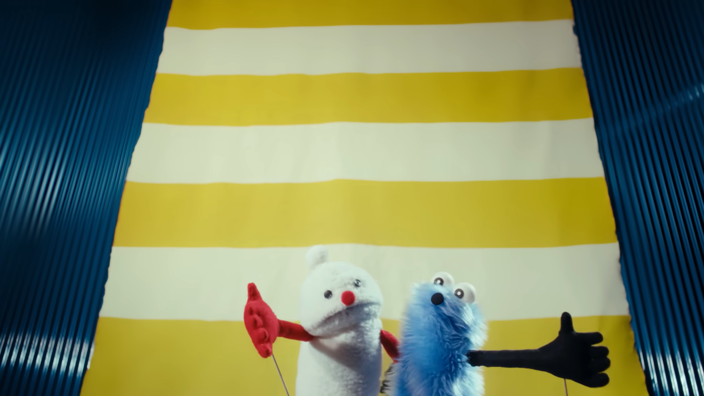

パペットスンスンとは
パペットの国「トゥッティプー」に住んでいる、6歳の男の子
スンスンが繰り広げる、日常を描いたショートアニメで、幅広い世代がこの不思議な世界観に夢中になっています。


スンスンのひみつ
スンスンはおじいちゃんであるゾンゾンとビデオ通話をします。
そこで学校で起こった内緒話をしますが......
黄色い花
スンスンは雨の日も風の日も一輪の黄色いお花に水をあげます。
特にキャラ同士で喋ったりすることはありませんが最後には感動してしまうかも？？


 

とてと
テレビやSNSで聴いたことがある人も多いのではないでしょうか
不思議な歌詞ですがどこか引き込まれる、スンスンの魅力が溢れる1曲です。